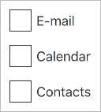
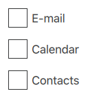

Container Controls
Qt Labs Controls offers a selection of container-like controls.
Provides a top-level application window | |
A container control base type | |
A side panel control | |
A frame control | |
A group box control | |
A page control | |
A pane control | |
Provides a stack-based navigation model | |
A swipe view control | |
A tab bar control | |
A tool bar control |
Each type of container can be used to group a set of controls together. The following sections offer guidelines for choosing the appropriate type of container, depending on the use case.
ApplicationWindow Control
ApplicationWindow contains optional header and footer items.
Frame Control

Frame is used to layout a logical group of controls together, within a visual frame.
GroupBox Control

GroupBox is used to layout a logical group of controls together, within a titled visual frame.
Page Control

Page provides page-specific header and footer items.
Pane Control

Pane provides a background color that matches with the application style and theme.
StackView Control

StackView organizes content pages into a stack.
SwipeView Control

SwipeView organizes content pages into a swipable strip.
TabBar Control

TabBar organizes content pages into tabs.
ToolBar Control

ToolBar is a container of application-wide and context-sensitive actions and controls.